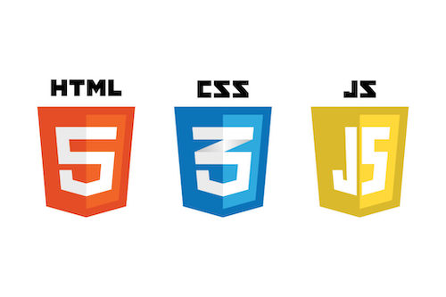

Pre Work Week 1
What are your thoughts on Pre Work Week 1?
Week 1 of 20 is in the books! I must say that Pre Work Week 1 had it's challenges. At times I was very frustrated at my lack of knowledge. As I was confronted with challenges and blockers, I looked to the information provided in the Trello board, as well as reaching out via the Slack Help channel. What a blessing that has been to my classmates and I.
My Biggest Challenge
My biggest challenge was working through the command line. I wanted to start off week 1 strong and I knew focusing on command line would be priority #1 for me. As the week came to a close, I began to feel more confident in command line, but not confident enough to know I am not at a place where I can begin to feel comfortable. There is a lot of work to be done and I am excited to work!
What did I learn this week?
This week I learned how to create a local repository with files by way of
the command line. It is so simple to right click on the desktop and create
a folder, but I really enjoyed learning how to do it through the command
line. I learned that the Command Line is bittersweet to a beginner. You
can begin to see the beauty of what you can accomplish once you get past
the blockers.
I also learned how to merge an existing project to a Github repository,
and the importance of having a local and remote copy of your work.
Pre Work Week 2
What are your thoughts on pseudo coding?
I have come to realize that if you don't come into a project with a plan, if you try to piece things together as they go, you can get lost in a mess of code. One thing I enjoy about pseudo coding is that you have a game plan. You have an understanding of where you're trying to go. From there, you map out your destination. I am an "on the fly" guy, so I am going to have to wrangle myself in to being disciplined to keep to the pseudo code model. It saves headaches and time.
What are you struggling with?
I have been struggling with several things this week.
- I have struggled with files and folder in my blog. I created a folder inside of my blog folder to hold each of my weekly blog posts. I have not figured out why my directories are not lining up correctly. When I click the nav bar to take me home or to a weekly blog link, I get an error. This is very frustrating because I am waisting a lot of time on an issue that should be easily resolvable for an experienced programmer, but it is a mountain for this "young in the tooth" novice.
- I am working through CSS and I find it fascinating how much it can revolutionize a webpage. I watched several videos and demos of CSS this week, trying to learn skills to implement into my code. I want to be further along than I am, so my mistake is trying to overwhelm myself with tasks I am not ready to take on. The importance of these first few weeks of learning to to know enough information to get to the next week. Theres no way to be in an advanced state this early in the journey, so my goal is to soak in the basics and learn as I go, knowing mistakes will be made and it's ok to be ok. The knowledge will come in time.
What are you excited or eager to learn more about?
I am excited to learn more about CSS this week. With JavaScript coming up as well, I want to get a firm grasp of the basics of CSS. I have some experience in JavaScript from a prior course, and I remember how challenging it is. I want to be on my toe going into the next weeks lessons and assignments to present a nice product from Pre Work Week 3 Demo Day.

Pre Work Week 3
What are your thoughts about the roles that HTML, CSS and JavaScript play in the process of rendering content and providing user experience?
When I was first introduced to the concept of a website built by HTML, CSS and Javascript, I was introduced to it as a 3 layer cake. Each layer providing crucial substance to a webpage. Sure, a vanilla (HTML) cake tastes fine as is, but add a layer of chocolate (CSS) and it enhances your taste buds. However if you really want a full delicious experience, you can top is off with a layer strawberry and you get the full taste experience. I think thats how I'm learning a web page works.Sure HTML and HTML and CSS webpages can look great, but user experience ignites when JavaScript comes to play. Without it, our online shopping experiences wouldn't be the same, we'd have no Netflix to binge, and we wouldn't know when we've met our allotted characters when typing a tweet.
This week I've really been relying on JavaScript notation, videos on JavaScript and better ways to understand
its functionality.I've been working hard on trying to understand what is being asked of be,
pseudo coding how to approach the problem,and then looking for the tools I need to complete the problem.
This has been a struggle to me because I like to jump head first into a problem with basic information,
when sometimes I need to take a step back and gather all of the puzzle pieces and come up with a plan of action.
What are some objects that your blog incorporates?
I am sad that I haven't added any JavaScript to my blog at this point. I want to be diligent in running my own code when I add JS to my page, and at this point I haven't. I am hoping that Pre Work Week 4 will help me gain confidence and understanding in creating my own JS for my blog. I would like to add a comment section to my blog for others to leave advice or comments on my work thus far.

Pre Work Week 4
What was one thing you liked and disliked about each of the new topics covered in prework?
Week 1 of HTML was very enjoyable. HTML seemed to be pretty easy to learn and it was a great start to to get me ready for the Boot Camp journey. I really can't think of anything that I disliked about HTML.
Week 2 starting the journey in HTML and CSS was a challenge but also rewarding. I appreciated learning how to style elements to bring an HTML page to life. I am still learning my way around CSS so one thing I wasn't crazy about was how many details can go into one element and how hard it is to memorize all of the styles and weights to an style. I've got a ways to go in making a webpage from scratch beautiful but I am still very early in my journey.
Weeks 3 and 4 of JavaScript were the hardest of Bootcamp so far for me as I got lost in all of the syntax. Functions, operators, loops, if/else statements, arrays, methods, variables, strings, booleans... you name it, I got confused about it! There was so much information that I tried to contain it all and I could only fit some much into my current 8gb mind! I'm looking forward to growing with JS and having it become a close friend. I feel as though I've come a good way in the last 2 weeks, but as I go into week 5, and week 1 of in house Bootcamp, I will have times that I am still confused and challenged, but I am also excited to learn from my instructors, with my classmates. I truly believe we will all bring out the best in each other!
What was helpful?
So many things helped me along during the 4 weeks I learned from home.
These are the 3 that most come to mind.
- Slack
- Google Hangouts
- Pseudo Code
-
I can't begin to say how useful it was to have the Help Channel on
Slack. It became a place of refuge for my classmates and I was we
dealt with challenges, blockers and frustration. Every time someone
asked a question, we all jumped in to see 1. if there was something we
could learn as well, and 2. If there was something we already knew
that we could helped each other with.
-
Being at a place where you're blocked can be very discouraging. You've
put hours into a project and you just can't get the code to work.
That's where the beauty of Google Hangouts came in. Having Justin and
Ian walk through our code with us and point us in the right direct was
invaluable. Their patience and understanding towards us brought a lot
of encouragement and ease to us knowing that they want us to succeed
and cheer us in out victories and build us up in our failures.
-
In coding, you've got to have a plan before you dive into a project.
Pseudo coding has been and will continue to to be the foundation for
any project I take on the rest of my career. It is nice to be able to
comment out your pseudo code and work through the code with the
comments as a guide.
What hindered your progress?
I believe my progress was hindered several ways. Life gets in the way at
times. I found that when I would sit time aside to work on a specific
task, as soon as I would sit down to begin working, something would
happen that would require my attention.
I also think that the wealth of material that has been made available to
us was part of my hindrance. I found that my lack of unfamiliarity to
certain projects was a lot at times. I would scour to find any
information that would assist my cause, and at times it slowed me down.
When I invest in something, I like doing research to make sure it is
worthwhile. I has found out these last 4 weeks that it takes time to
develop knowledge to do certain tasks, or learn ways to be DRY in my and
make things simpler. I must take with me from this last month that it's
ok to not be ok, and that in time things will become easier as my
knowledge grows.
How did you overcome challenges?
Like I mentioned earlier, the things that were helpful helped me overcome my challenges. Guidance from classmates and instructors, pseudo code, reading, watching code demonstrations, walking away and breathing, getting a good nights rest to tackle the problem the next day. All of these things helped me this month. Also, coffee. Lots of coffee.
Week 1
What did you learn about that helped you understand more about design?
I learned more about the importance of contrast, repetition, alignment and proximity, and how all of them work together to make a quality product. Upon looking at examples of low quality work, it opened my eyes to seeing how easy it can be to make mistakes, and how to develop an eye for things that make the product less desirable.
What do you want to continue learning about that helps you understand design better?
Well personally I want to learn to design better on Bootstrap. I had fun with the template in my project this week, but I want to understand it enough that I can piece my blog together without having to use a template. I struggled with that this weekend as I tried to create my new Blog homepage.
What Design aspects are important to you as a user and as a developer?
As a user, I want a product that doesn't make me do the work. I like to see a clean, readable product that doesn't require my eyes to do the work of the developer. I want to be able to find what I'm looking for in a website or app without scouring the site. As a developer, I want to provide that to my clients.
What is the number one thing that held you back this week? Why?
I think my lack of understanding on Bootstrap the first day we worked on it held me up a day.
I had an idea of what I wanted to do, but my ideas were not matching up with the way I was comprehending the
documentation. I was confused by the grid system. The columns, rows, sizes ect. I am pretty happy
with the Campaign project I made. I would like to add some things to my blog that didn't make the Campaign
project.
What is one thing you would like to get better at in bootcamp?
Time management. Assessing the tasks at hand, setting a time period that I work on each item, and moving on to the next task. There are components that I struggled with this week and I took way to long to decide to keep them or move on. The Bootstrap carousel being one. I wasted way too much time trying to get that thing working.
Week 2
What did you learn about that helped you understand the development process?
I learned a lot about data structures and methods this week, which will are imperative to the development process. Walking through and implementing API's, JSON data (objects- values and properties) and Asynchronous JavaScript (fetch/promise, then/fulfillment, catch/error) will help me to become a stronger developer. I am looking forward to using the information I learned this week in my future projects.
What does it mean to develop good code?
This is a question I have asked myself every week of this course. What does it mean to develop good code? I think thats a question I'll continue to piece together as I grow. One thing I've learned over this week is that to develop good code, you have to develop good thinking. Critical, computational, logical thinking. All extremely important to developing good code. I think asking the right questions develops good code. Knowing when and how to ask questions continues to be a important part of the coding process.
What does it mean to be a good developer?
All of the things that I mentioned to develop good code can be used to answer this question as well! I think speaking outside the box of being a good developer, being open to feedback, listening to other developers on your team, making an extra effort to step in and help by answering a question or offering to grab a cup of coffee for a friend knee-deep in code can be a big part of being a good developer. To me right now, growing as a developer I want to be better at identifying a problem faster, identifying the right steps to take as a process starts. I can't say it enough because I can't hear it enough, Pseudo Coding is so important. It is the foundation to be laid before the first piece of code should be written. I need to engrain that in my mind.
What is one thing that programmers hate doing?
Programmers aren't fond of overdoing a simple task. Time is valuable and nothing is worse
than writing overbearing ,repetitive, unnecessary code. I am looking forward to
learning more shortcuts in code to keep from turning what should
be 5 lines of code into 30.
Week 3
What are three ideas you might want to do for your final project?
I have been asked this by friends and family during these first 2 months of Bootcamp. It is something that I haven't given much thought to as I wanted to learn the the languages and frameworks before I gave it serious thought. My thought process behind this is that as I grow in knowledge and understanding, I will have a better idea of what I can do and what will be a fun challenge for myself. I like the idea of making a clone of one of my favorite apps, Twitter. I also like the idea of making an app that helps me keep up with my sports card collection as collecting is my favorite hobby. I also like the idea of asking friends and family if there is something that they do daily or often that would be benefited by having an app. So those are 3 thoughts I have as of this evening.
Why do you see JavaScript useful or hard to use?
While I see Javascript as challenging at times, I see the beauty in all it allows a user to do. As a developing programmer, I have at times looked at a problem dumbfounded, which can be disheartening, but I remind myself that is is like learning a foreign language in 2 months. Within that time frame you can learn words, some phrases, maybe even a little bit of local lingo, but theres still work to be done to be proficient. So while I see JS as a challenge, I am looking forward to continue the learning process.
What aspects about JavaScript are you interested in learning more about?
One of the best ways to learn JS is by the morning Kata's that we are assigned as the day begins. It gives us an opportunity to use the information we have learned and for us to seek information on new ways to solve problems. I want to pick up those new ways faster and enjoy the challenge each morning. I believe as I become more successful at Kata's, those wins will carry over to my projects.
Week 4
Why do you see JavaScript Frameworks and Libraries useful or hard to use?
I've enjoyed learning Bootstrap and React. I think they are great tools to make the development process simpler for a programmer. A developers main goal is to code a program. Frameworks and libraries slim down the time needed for styling so its easier to keep coding the main thing.
What Frameworks or Libraries are you interested in learning more about?
I want to spend a good amount of time learning React. Other than that, the next frameworks that we will be introduced to in Bootcamp will keep me busy!
Find one emerging JavaScript tool that you would like to learn more about or use in your final project.
I want to learn more about NPM. We have just begun using it with React.
Week 5
Why are CLIs scary?
Week 1 when I was introduced to using the CLI to access Github I was very nervous. As I've used it more, I am pretty comfortable with it. I've got a lot to learn, but everything I have so far has been easy to remember.
What have you learned about CLIs?
I've learned that you can be do so muchh without ever leaving the keyboard. You can access any file, folder, application through the command line.
Would you build a CLI? What would it do?
This is an intriguing question. What package would I create for the CLI? What would it do?
I would look for something to make my life and the lives of other users easier, thats for sure! What
would that be? Thats an even better question and one I'm going to have to think on because I am
continuing to learn the CLI now and what I want to make might already be made!
List some ideas that without a Framework, would take you a long time to code
Using JSON data, you can display thousands of blog posts by mapping over a function that would rendering a page framework to display all of the blog posts. Anything that could be made by using repetitive code, can most certainly be used by a framework to save time.
How do you feel now (week 5) compared to when you started?
When I think on this, I am reminded of words from The apostle Paul in 1 Corinthians 13 "When I was a child, I spake as a child, I understood as a child, I thought as a child: but when I became a man, I put away childish things.
11 When I was a child, I spake as a child, I understood as a child, I thought as a child: but when I became a man, I put away childish things.
12 For now we see through a glass, darkly; but then face to face: now I know in part;
Week 6
What do you like about React?
Week 1 of 20 is in the books! I must say that Pre Work Week 1 had it's challenges. At times I was very frustrated at my lack of knowledge. As I was confronted with challenges and blockers, I looked to the information provided in the Trello board, as well as reaching out via the Slack Help channel. What a blessing that has been to my classmates and I.
What do you like about React?
I like how you can break down a project by components. You can make your code much cleaner and easier to use and find.
What are you struggling with the most about React?
Dynamic rending is still a struggle for me. Connecting the dots from using a component by its props and state is confusing sometimes,
Local Storage and Life Cycles are still causing me pain.
I also learned how to merge an existing project to a Github repository,
and the importance of having a local and remote copy of your work.
What is your biggest win this week? Halfway through!
My biggest win for the week. Some weeks it seems like there aren't many. This week seemed like one of those weeks. I believe my understanding is growing but I didn't checkoff 2 of my goals for the project this week. I took this weekend to go back and study vanilla JS in areas that I am still lacking. I haven't found the time to go back to things I didn't spend enough time on, so I made it priority #1 this weekend. I am still planning on doing more of that this week. As our front end time is coming to a close, I want to get more well versed to be ready for the final project in a few weeks. My win for the week was taking time to catch up on JS, even if it put me behind for next weeks project.
Compared to week three, what are three ideas you might want to do for your final project? Are they the same, or have they changed now that you understand more about the technology and your limitations?
Right now my ideas are the same.
Week 7
What have you learned about PHP and server side programming that you were not aware of prior to this week?
PHP is an interesting language that I am looking forward to learning more about. Since the start of bootcamp I have wondered what back end programming would even look like since it seemed I could do whatever I wanted in Front-End. Boy was I naive!
What do you want to know more about PHP and server side programming?
I want to learn more about using databases with PHP. Intertwining a Database with PHP was a challenge to learn this week but it seems like it will be made easier when we venture into Laravel next week.
How has learning PHP been? What are some similarities and differences you can see with JS?
Variables don't seem much difference. A simple $ replaces var/let. Less typing. Loops, if statements, bootstrap all work kinda the same.
What if you had started with PHP instead of JS?
I think I would have had a harder time with PHP. I had my struggles with JS but PHP would have been
a harder language to learn as database learning is essential as well.
Are there any exercises you think would be improved if you refactored them to PHP from JS? Do you plan to?
I dont think there are many exercises I would want to do in stand alone PHP. Too many vulnerabilities that I don't currently know how to combat,
so I am looking forward to learning Laravel to solve those issues.
Week 8
What are your thoughts about how far you have come? How has your Digital Literacy, Computational Thinking, and Adoption of Coding Culture increased?
It has not been difficult to be honest with myself or my instructors. I have had struggles in every language or process we've learned, as we've moved at a rapid pace. I am also not going to condemn myself that I havent learned enough. I am developing in to a programmer at my pace. Even if I have to revisit syntax everyday, or if I have to re-do some pseudo code, I am learned each day. I love looking back at past projects and remembering how hard I thought they were and seeing how much I've learned.
How do you plan on continuing to grow those areas?
Practice, patience, persistance and pseudo code!
What are you struggling with the most in the Tech Stack so far and why?
State and rendering probably. They are the areas I plan on attacking over the next few weeks. I think that I got tripped up hard early on in React and they became the area I struggled with the most.
Week 9
What are your thoughts about Laravel and React?
I am enjoying back end programming. I think once I get the grasp of it, I will really enjoy backend more than front end. I like how a full-stack project can be made using React and Laravel.
What is one thing that you love about React or Laravel that you used to hate / didn't understand how to use?
Ha, I've enjoy learning and working with them this week but I am not confident in them together yet so we are currently working through our relationship, I wouldn't say its love just yet.
Compared to weeks three and six, what are three ideas you might want to do for your final project? Are they the same, or have they changed now that you understand more about the technology and your limitations?
The first 8 weeks of this program, I didnt give much thought to the final project. I wanted to see how everything worked and keep that in consideration. I have decided that I am going to be working on a Bengals message board. I think this will be a good challenge because the project will warrant me to use methods and other code that I am not fully comfortable with. So while I'll be working on a project that I can enjoy doing, I will also be continuing my learning in fields I need growth.
What cool new features have you learned about from the languages and frameworks you already know that will improve your workflow / add slick features to your final project?
How many jobs have you applied to?
I have not applied for any jobs yet. I will focus more on that as Bootcamp ends. I want to continue to devote my time to learning so I dont get distracted by the jpb search process.